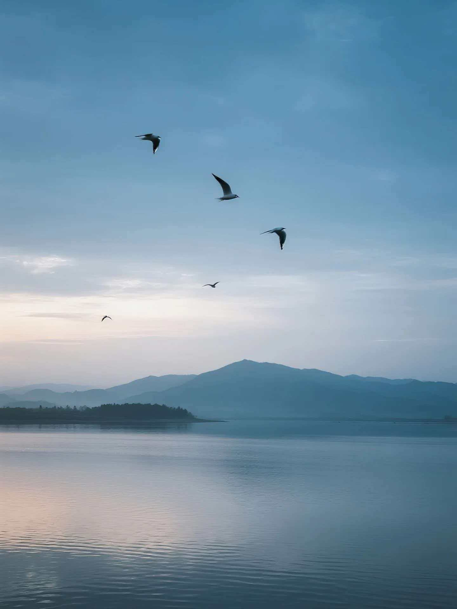

中国第一大淡水湖 · 候鸟的天堂
鄱阳湖位于江西省北部、长江中下游南岸，是中国第一大淡水湖，也是国际重要湿地。湖体南北长约173公里，东西平均宽约16.9公里，丰水期面积可达4000平方公里以上，枯水期也有约500平方公里。
鄱阳湖承纳赣江、抚河、信江、饶河、修河五大河流来水，经湖口注入长江，是长江中下游重要的水量调节器。湖区属于亚热带湿润季风气候，四季分明，雨量充沛，优越的自然条件孕育了丰富的生物多样性。

鄱阳湖湿地是中国最大的淡水湿地生态系统之一，拥有丰富的水生植物、浮游生物、底栖动物和鱼类资源。湖区有水生植物约200种，鱼类140余种。每年秋冬季节，湖水退去，大片的草洲和浅水滩涂裸露出来，为越冬候鸟提供了丰富的食物来源和理想的栖息环境。
鄱阳湖湿地于1992年被列入《国际重要湿地名录》，2013年被联合国教科文组织列为世界重要生态区。保护好鄱阳湖湿地，不仅关系到数百万候鸟的生存，也关系到长江中下游地区的生态安全。
鄱阳湖是东亚—澳大利西亚候鸟迁徙路线上最重要的越冬地之一。每年10月至次年3月，数十万只候鸟从遥远的西伯利亚、蒙古等地飞抵鄱阳湖。这里为候鸟提供了丰富的食物——苦草、苔草、马来眼子菜等水生植物的根茎，以及小鱼、小虾、螺蛳等。广阔的湖面和草洲也为候鸟提供了安全的栖息场所。